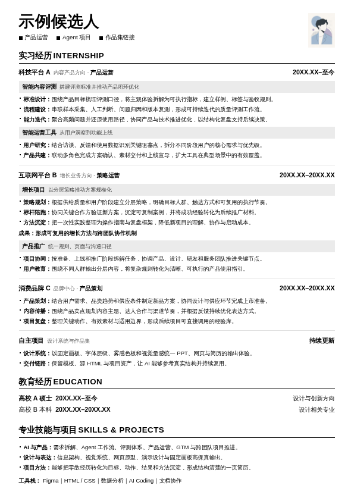

原始经历文档input-example.md
# 我的简历素材
## 经历一｜某段工作或实习
### 项目 A
- 我当时主要负责什么
- 遇到了什么问题
- 我采取了哪些行动
- 最后取得了什么结果
### 项目 B
随便写自己的经历即可，
不需要先整理成专业简历语言。
## 教育经历
- 学校、专业、时间
只需保证事实准确；项目命名、层级拆分、重点提炼和版式适配交给 AI。
不必先学会“简历语言”。把真实经历写进 Markdown，AI 会提炼层级、统一表达，并套用固定 A4 模板一键生成。
